El tenista estadounidense Andre Agassi se alejó de la competición activa , pero sigue más involucrado que nunca en su campaña de recaudación de fondos para su organización benéfica de ayuda a los niños con la que también quiere ser un auténtico campeón.
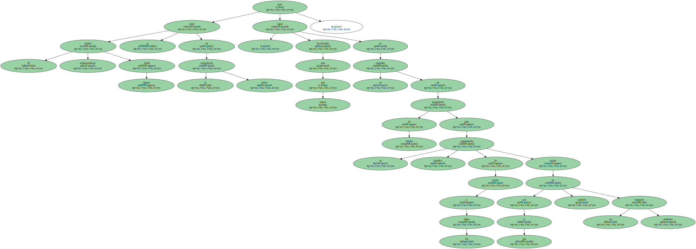Agassi , que no ha tenido su mejor año deportivo ni en el capítulo personal , estuvo en Houston para participar en varios partidos de exhibición junto a otros famosos del deporte como Clyde Drexler y Charles Barkley , que le permitieron incrementar los fondos de su organización benéfica " Andre Agassi Charitable Foundation " , dedicada a ayudar a los niños más necesitados.
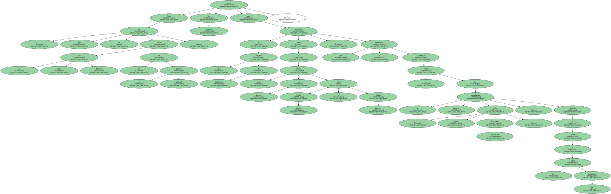" Si algo quiero en esta vida es a los niños y ayudarlos ha sido siempre muy fácil de hacer para mí , por lo que me cuesta mucho entender que pueda haber personas que no sientan ese compromiso " , declaró a Efe Agassi.
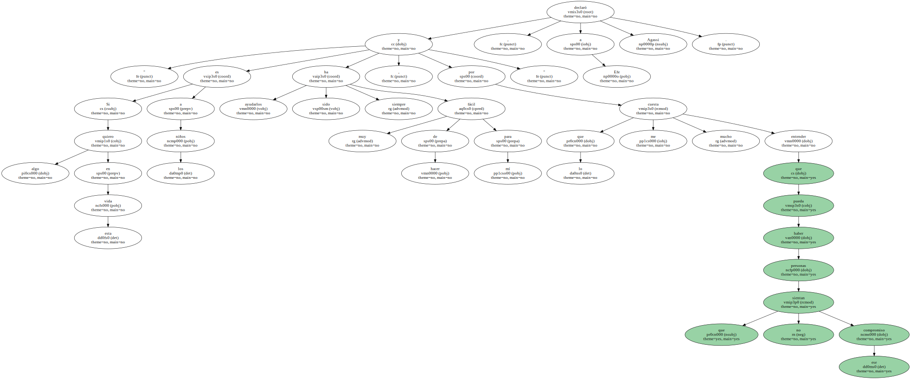" Si queremos que haya un futuro lleno de esperanza , entonces los niños son la base ".
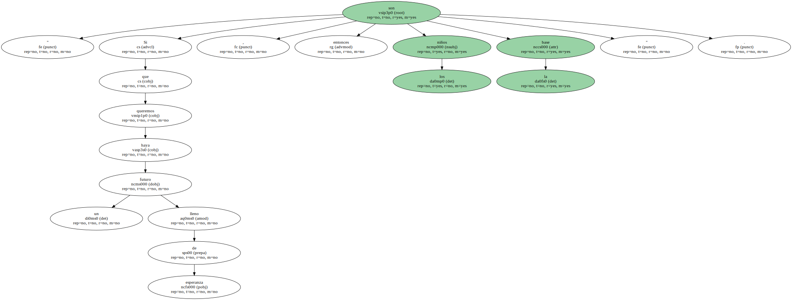Agassi , de 30 años , volvió a mostrar el lado positivo de su personalidad al reiterar que en su vida existen ya unas prioridades muy definidas y el ayudar a los niños ocupa el primer lugar.
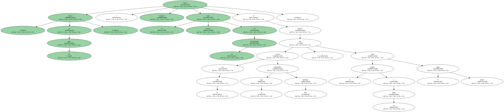" Tal vez la gran diferencia de mi actitud con el resto de las personalidades y celebridades es que no sólo hablo de la necesidad de ayudar a los niños sino que lo pongo en práctica en la búsqueda de ingresos para darla " , explicó Agassi.
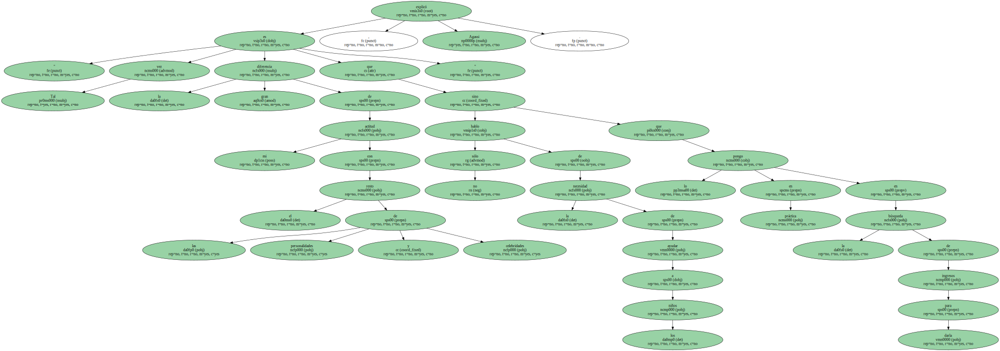El ganador de seis títulos de Grand Slam , como sucedió en el pasado Abierto de Estados Unidos , mostró una gran madurez y definición de criterios personales al reiterar que en la vida existían metas y sueños que cumplir , pero sobre todo había que ser agradecido con las cosas recibidas.
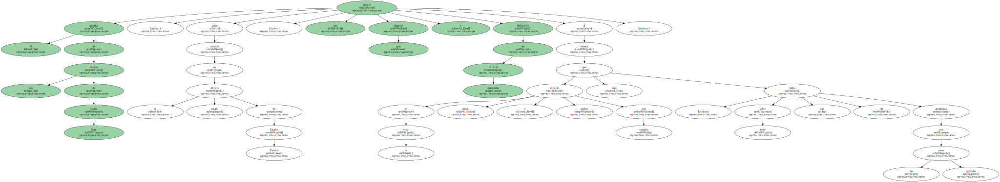" Mi concepto y elemento más importante es que deseo ser un ejemplo con mis acciones sin que tenga que copiar a nadie " , destacó Agassi.
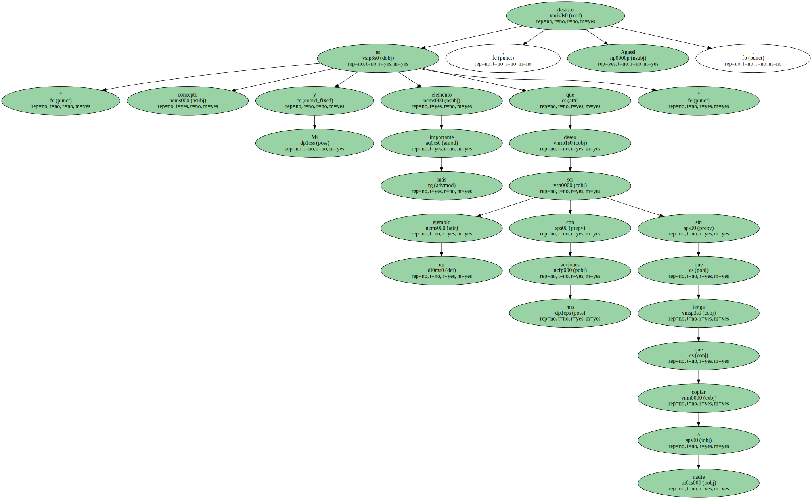" Mi personalidad me ha ayudado a superar los pasados seis meses que han sido los más duros de mi vida ".
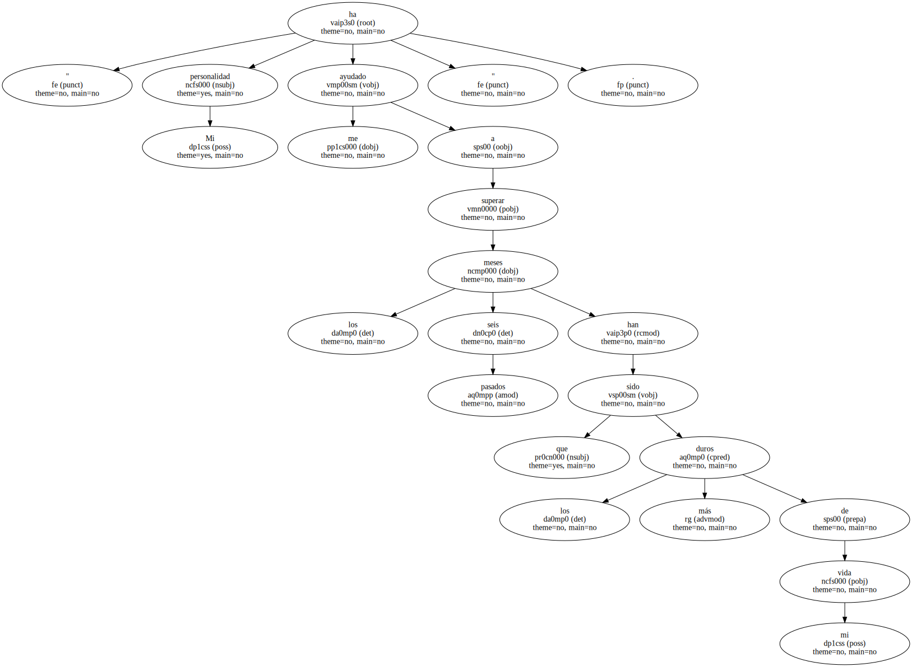Agassi , que vivió nueve meses de gloria deportiva con tres títulos de Grand Slam y finalista en el cuarto que disputó , vio como lesiones y problemas familiares lo dejaron eliminado en la segunda ronda del Roland Garros , Abierto de Estados Unidos , alejado del equipo de la Copa Davis de su país y de los Juegos Olímpicos de Sydney.

" Los resultados deportivos no fueron los mejores para mí , pero fuera de los campos de tenis mi vida se enriqueció con aspectos muy positivos , que son los que me demuestran que siempre hay objetivos que cumplir y esa filosofía es la que me ha permitido mantenerme más centrado que nunca " , subrayó Agassi.
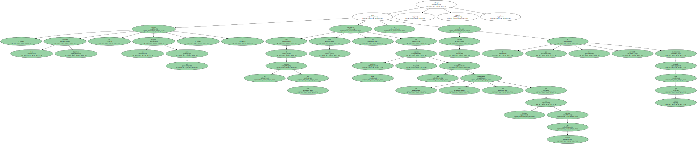El duro golpe recibido con el descubrimiento que su madre y hermana mayor sufrían de cáncer de mama , afectó a su rendimiento deportivo , incluida la ausencia de los Juegos Olímpicos de Sydney , donde esperaba defender la medalla de oro conseguida en Atlanta'96, pero en absoluto le han quitado la ilusión de seguir en la competición activa.
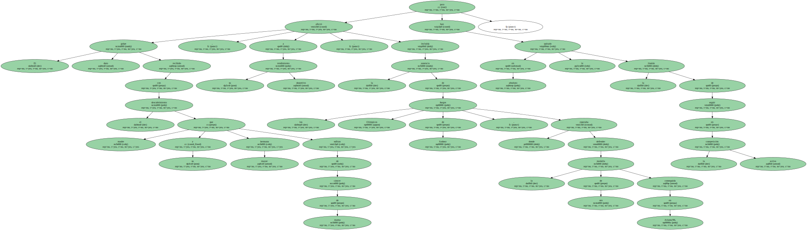" Lo primero de todo es que tanto mi madre como mi hermana siguen mejorando y cada uno dentro de la familia mantenemos nuestras perspectivas , dando gracias por todo lo que tenemos y luchando por las prioridades que de verdad reflejan un valor auténtico " , subrayó Agassi.
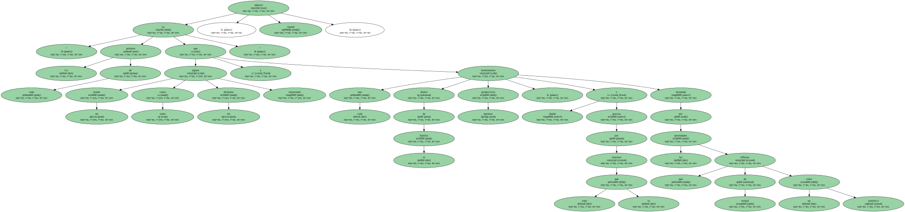El dos veces campeón del Abierto de Estados Unidos reiteró que aunque el tenis seguía siendo una de ellas , también existía un elevado grado de confusión en su valoración de lo que puede ser el futuro como profesional.
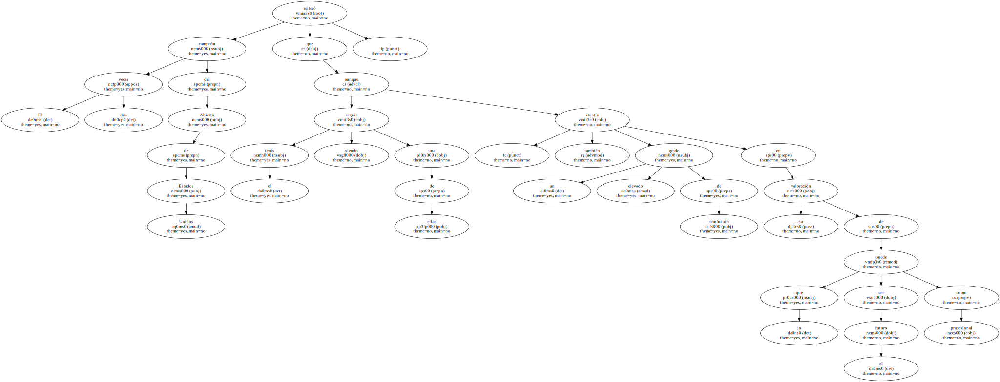" Antes que nada necesito recuperarme al ciento por ciento físicamente para poder competir con jugadores que son más grandes y más fuertes " , explicó Agassi.
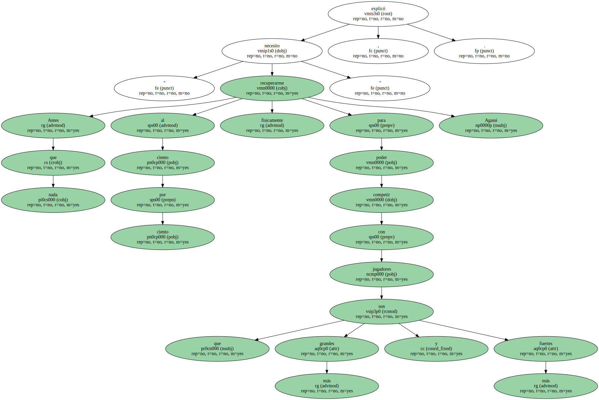" La velocidad en mi juego debe ser fundamental y debo conseguir ese ajuste antes de volver a las pistas ".
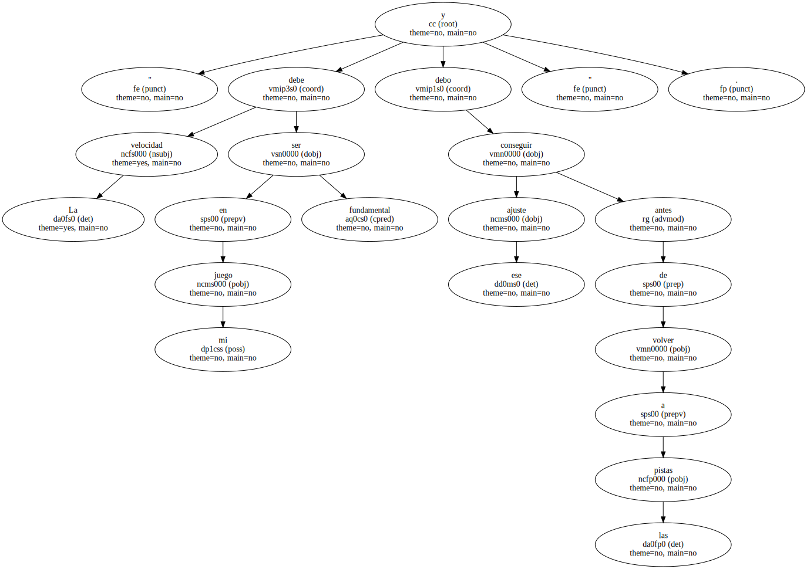Agassi insistió que puede ser mejor jugador para volver a tener un gran año , aunque no le garantice los triunfos que tuvo en 1999 , una etapa que consideró única en todos los aspectos.
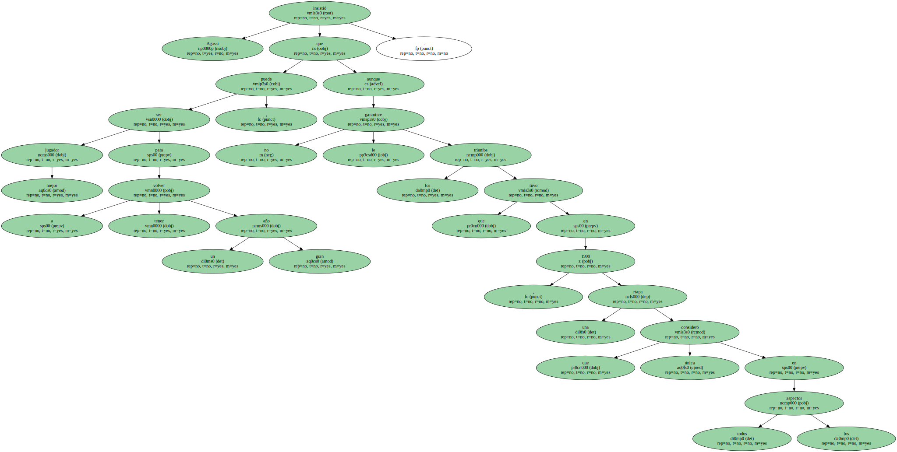" Estoy convencido que igual que gané tres títulos de cuatro Grand Slam me pude quedar sin ninguno porque la verdad es que fue un año un tanto absurdo y de suerte " , reconoció Agassi.
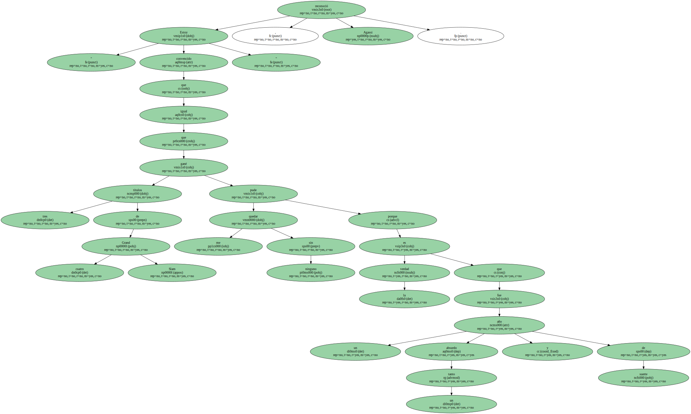" Ahora lo que busco es volver a tener una gran temporada , con un poco de suerte y luego comenzar a pensar en el resto de prioridades que me ofrece la vida ".
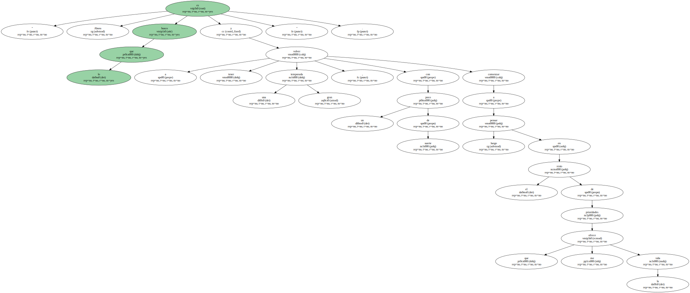